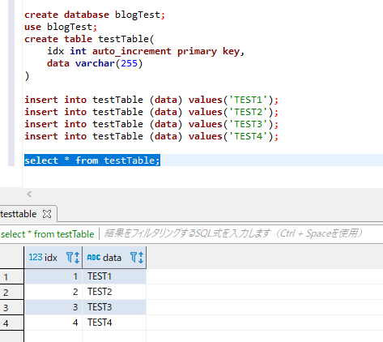
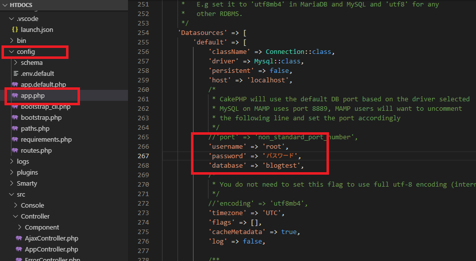
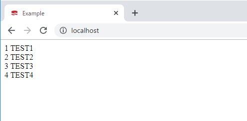
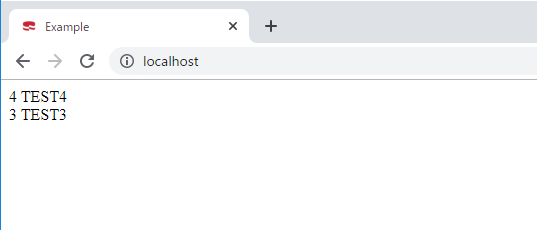
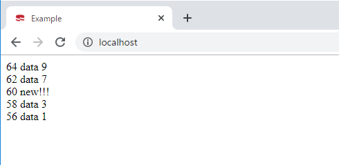

[CakePHP] データベース(MariaDB(Mysql))を接続する方法
こんにちは。明月です。
この投稿はPHPのCakeフレームワークでデータベース(MariaDB(Mysql))を接続する方法に関する説明です。
以前、バニラPHPバージョンでmysqliのモジュールを拡張してデータベースに接続、検索、格納、削除などに関して説明したことがあります。
link - [PHP] データベース(mariaDB)を連結して使う方法
Cakeフレームワークでデータベースを接続してデータ管理することは以前バニラPHPバージョンよりいいです。
ORMフレームワークでデータを管理するし、取得することもC#のLinq式みたいな感じの実装するので接近性がよくなりました。
link - https://book.cakephp.org/3/ja/orm/database-basics.html
先にデータベースにクエリを作ってデータを準備しましょう。

以前にテストで使ったデータをそのままに使います。
そしてデータベースに接続するために設定情報ファイルを修正します。
設定情報ファイルはCakeフレームワークのconfigフォルダの中にApp.phpファイルがあります。App.phpファイルの中でデータベースコネクション情報を設定するところがあります。
それをデータベース設定環境に合わせて修正します。

データベース設定が完了したらHomeControllerのクラスからデータベースのデータを取得します。
<?php
namespace App\Controller;
use Cake\Datasource\ConnectionManager;
class HomeController extends AppController {
public function index() {
// 設定ファイルで設定したコネクション名からコネクションを取得する。
$connection = ConnectionManager::get('default');
// testtableからデータを取得する。結果は連関配列タープだ。
$results = $connection->execute('SELECT * FROM testtable')->fetchAll('assoc');
// データレコード単位は一般配列で各カラムは連関配列になっています。例えば、$results[0]['idx']は一行のレコードでidxカラム値だ。
// Viewデータ値に設定
$this->set("testtable", $results);
}
}
<!-- レコード単位で繰り返す。 -->
{foreach from=$testtable item=entity}
<!-- レコードのidxとdataカラムを表示する。 -->
{$entity["idx"]} {$entity["data"]}
{/foreach}

上の結果をみれば、データベースからデータを取得したことを確認できました。
上のクエリをみれば、単純に「select * from testtable」式を飛ばしてassocを連関配列で取得したことで以前の方式と別に差がありません。
<?php
namespace App\Controller;
use Cake\Datasource\ConnectionManager;
class HomeController extends AppController {
public function index() {
// 設定ファイルで設定したコネクション名からコネクションを取得する。
$connection = ConnectionManager::get('default');
// queryのオブジェクトを生成する。
$query = $connection->newQuery();
// 言語統合クエリ式で作成ができる。
$results = $query->from('testtable') //検索テーブル
->where(['idx >' => 2]) //検索条件 (2を超過した数)
->order(['idx' => 'DESC']) //レコード整列条件
->select('*') //検索カラム
->execute() //実行
->fetchAll('assoc');
// Viewデータ値に設定
$this->set("testtable", $results);
}
}

上の例をみれば$connectionからクエリオブジェクト$($query)を受け取ります。$queryオブジェクトは「from」、「where」、「order」、「select」の関数でクエリを組み立てます。
この関数は「excute」関数で組み立てるので順番が変わっても結果は同じです。
fetchAllでデータベースからデータを受け取ります。
<?php
namespace App\Controller;
use Cake\Datasource\ConnectionManager;
class HomeController extends AppController {
public function index() {
// コネクションを取得する。
$connection = ConnectionManager::get('default');
// testtablのデータを全て削除する。
$connection->delete('testtable');
// testtableにデータをinsertする。
for ($i = 0; $i < 10; $i++) {
// dataカラムで「data+(0~9)」のデータを入れる。
$connection->insert('testtable', ["data" => "data " . $i]);
}
// testtableの奇数を削除する。(パラメータ:テーブル名、条件)
$connection->delete('testtable',['idx%2' => 1]);
// testtableの10倍数はデータを「new!!!」に変更する。(パラメータ:テーブル名、修正データ、条件)
$connection->update('testtable', ["data" => "new!!!"] , ['idx%10' => 0]);
// クエリオブジェクトを生成する。
$query = $connection->newQuery();
// testtableでidxが2より大きいし降順でデータを取得する。
$results = $query->from('testtable')
->where(['idx >' => 2])
->order(['idx' => 'DESC'])
->select('*')
->execute()
->fetchAll('assoc');
// Viewデータ値に設定
}
}

結果はidxが偶数だけあります。60の場合は10倍数なので「new!!!」変更されたことを確認できます。
$connectionにはinsert、update、deleteの関数があります。
insertの場合は初めのパラメータはテーブル名で２つ目は連関配列によってデータを入れることでinsertが行います。
updateの場合は初めのパラメータはテーブル名で２つ目は更新するデータを連関配列、３つ目はデータ更新条件です。
deleteの場合は初めのパラメータはテーブル名で２つ目は削除条件です。
確かに以前にモジュールだけデータベースを使うことよりORMフレームワークがあればデータベース管理がしやすいみたいです。
次の投稿にEntityやTableクラスに関してもっと詳細に説明します。
ここまでPHPのCakeフレームワークでデータベース(MariaDB(Mysql))を接続する方法に関する説明でした。
ご不明なところや間違いところがあればコメントしてください。
- [CakePHP] Errorページを設定する方法2020/02/20 03:00:00
- [CakePHP] Transactionを使う方法とEntityクラスを利用してInsert、Update、Deleteする方法2020/02/19 03:00:00
- [CakePHP] ORMのテーブルFetch設定2020/02/18 03:00:00
- [CakePHP] Cakeフレームワークでデータベースに接続する時に使うQuery式とEntityクラス、Tableクラス、ResultSet2020/02/17 08:16:23
- [CakePHP] データベース(MariaDB(Mysql))を接続する方法2020/02/14 03:00:00
- [PHP] namespaceとuse2020/02/13 03:00:00
- [CakePHP] RequestとResponseに関して2020/02/12 03:00:02
- [CakePHP] PHPのCakeからAjax要請がある時、jsonタイプ(json_encode関数)でResponseする方法とControllerでViewを選択する方法2020/02/08 03:00:00
- [CakePHP] MVCフレームワークのCakeをインストールする方法2020/02/07 03:00:02
- [PHP] 自動require及びincludeをする方法(spl_autoload_register)2020/02/05 03:00:00
- [PHP] 匿名関数(ラムダ式)とクロージャ(closure)2020/02/04 03:00:00
- [PHP] PHPのコーディング領域とデザイン領域を分離するテンプレートライブラリ Smarty2020/02/02 03:00:00
- [CentOs] ジェンキンス(Jenkins)をインストールする方法2021/10/18 18:28:58
- [Project design] 詳細設計(インターフェース設計と抽象化作業)2021/10/18 18:23:15
- [Project design] 基本設計(画面設計とDB設計)2021/10/17 21:21:11
- [Design pattern] 1-4. デザインパターンの抽象ファクトリーパターン(Abstract factory pattern)2021/10/15 19:31:03
- [Project design] 要件定義(要求事項整理)2021/10/15 19:28:58
- [C#] 52. Reflection機能を使い方 - Variable2021/10/15 19:27:37
- [Project design] プロジェクトを工程(ウォーターフォール vs アジャイル)2021/10/14 18:36:04
- [C#] 51. Reflection機能を使い方 - Method2021/10/14 18:34:21
- [C#] 50. Reflection機能を使い方 - Class2021/10/13 18:34:13
- [C#] 49. Operator(演算子)のオーバーロードを使い方2021/10/12 18:28:42
- [C#] 48. IEnumerableとIEnumerator、そしてyieldキーワード2021/10/11 19:49:33
- [C#] 47. Nugetを使い方(外部ライブラリ)とデータベース(MariaDB(Mysql))を使い方、そしてトランザクション(Transaction)2021/10/08 18:58:57
- [Window] MariaDBをインストールする方法2021/10/08 18:56:05
- [C#] 46. データベース(MSSQL)に接続する方法2021/10/07 18:39:58
- [C#] 45. ネットワークソケット通信(Socket)を使い方2021/10/06 19:06:25